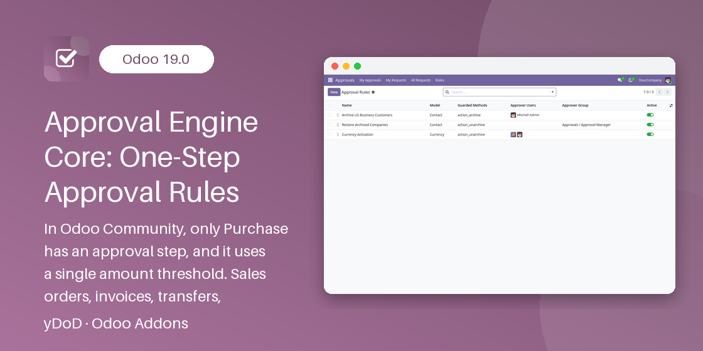

Related Modules
Work even better together with yDoD apps for Odoo 19.0.
yDoD · Tools / Workflow
Odoo 19.0 Community & Enterprise · depends only on Base and Discuss · LGPL-3

In Odoo Community only Purchase has an approval step, based on a single amount threshold. Sales orders, invoices, stock transfers, expenses and custom documents can be confirmed by anyone who has access to them. Large deals, risky customers or unusual transfers slip through without a second pair of eyes.
Approval Engine Core adds a generic, single-step approval gate to any model. You pick the model, a condition such as amount_total > 50,000,000, the confirm method to guard (action_confirm, action_post, button_validate…) and the approvers. Matching documents cannot be confirmed until an approver says yes, and every decision is written in the document chatter.
Made for finance controllers, sales and operations managers, and Odoo integrators who need a simple approval step without buying Enterprise Approvals or writing custom code for every model. It is also a reusable base for other approval add-ons.
Guard sales orders, invoices, transfers, expenses, contacts or custom models from one rule screen.
Build the condition with the standard domain editor; only matching documents need approval.
The guarded method stops with "This document requires approval" and nothing is confirmed.
Added automatically to the Action menu of the target model when a rule is saved.
Each approver gets a To Do activity and a chatter notification on the document.
Approve or Reject from the list or the form; a reject reason is mandatory.
One menu and a user smart button list every pending request across all models.
Only assigned approvers can decide, and company rules isolate rules and requests.
Open Approvals → Rules (or Settings → Technical → Approvals → Rules) and create a rule:
When a rule is saved, the engine wraps the guarded methods of the model, the same way Odoo automation rules patch models. Clicking the original button on a matching document without an approved request raises "This document requires approval" naming the rule, and the original method does not run. After approval the same button works normally. Archiving the rule removes the guard and its Action menu entry.
Select one or more documents and use Action → Request Approval. The engine creates an approval request (APR/00001…) in To Approve, makes the approvers followers, schedules a To Do activity for each of them and posts a note in the document chatter. A document can only have one pending request per rule, and an already approved document cannot be requested again.
An approval stays valid while the document still matches the same rule. It is tied to one record: the document and rule of a request cannot be changed, so an approval can never be reused on another record. After a rejection, edit the document and request approval again; a new request is created.
The Approval Manager group (included in Settings administrators) configures rules and may decide any request. Internal users only see requests they submitted or must decide, and can approve only requests assigned to them or their group. Company record rules isolate rules and requests between companies.
The name of the method called by the button, visible in debug mode by hovering the button: action_confirm for sales orders, action_post for invoices, button_validate for transfers. Several names can be separated by commas.
The approver users of the rule and the members of its approver group, plus Approval Managers. Other users get an error if they try, and they cannot even see requests that do not concern them.
No. This module provides one approval step per rule by design, and serves as a reusable base for other approval modules.
Yes. A rule can apply to one company or to all companies when the Company field is empty; requests take the company of the document, and users only see rules and requests of their allowed companies.
The decision and reason are posted in the chatter of the approval request itself, and activities are scheduled on the request.
The guards, Request Approval actions, rules and requests are removed, and the original confirm buttons behave as standard again. Messages already posted in document chatters are kept.
Need help with a rule, a specific workflow on top of this engine or a custom approval feature? yDoD answers questions and builds tailored Odoo modules.
Dody Ahmad Kusuma Jaya · yDoD
Work even better together with yDoD apps for Odoo 19.0.